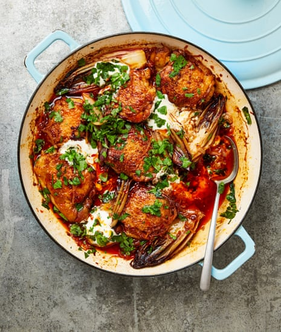

Harissa vinegar chicken with chicory

Chicken and vinegar – or poulet au vinaigre, to honour the dish’s French credentials – is a timeless classic. It’s not hard to work out why, either – it takes such little effort to produce such big results. The addition of harissa takes it down a north African route, a path to which I’m often drawn when eating out in France. Make this a day ahead, if you like – the flavours only improve – ready to reheat and serve with the soured cream and coriander on top.
Season the chicken with a teaspoon of salt and a good grind of pepper. Put the butter in a shallow 28cm casserole dish or saute pan on a medium-high heat. Once it’s melted and hot, lay in the thighs skin side down and leave to cook for eight to 10 minutes, until deeply golden underneath. Turn over the chicken pieces and cook on the other side for two to four minutes more, until that, too, is golden.
Transfer the browned thighs to a plate, then lay in the chicory halves cut side down. Leave to cook for two minutes, until deeply golden, then turn and cook for another minute. Lift the chicory on to the chicken plate, add the shallots and a quarter-teaspoon of salt to the hot pan and cook, stirring occasionally, for two minutes, until lightly browned and softened.
Add the harissa, cook, stirring constantly, for 20 seconds, then, the moment it starts to stick to the pan, add the vinegar and cook for 30 seconds – it’ll bubble away quickly and reduce. Return the chicken and chicory to the pan, pour in the stock, stir in the sugar, and bring to a boil. Leave to bubble away for three minutes, then turn down the heat to a gentle simmer and cook for 45-50 minutes, until the chicken is cooked through and tender, and the sauce reduced by half.
Serve straight from the pan with the soured cream and coriander spooned and scattered on top.